Instituto de Formación Técnica Superior N.° 29
Tecnicatura Superior en Desarrollo de Software
Segunda etapa: Análisis y modelado del diseño
Talento Tech
Santiago Cuda · Adrián Madroñal · Martín Juan · Nicolás Rolón · Gastón Zampar
El Instituto de Formación Técnica Superior N.° 2 DE 20 (en adelante, IFTS N.° 2) es una institución pública dependiente del Ministerio de Educación del Gobierno de la Ciudad de Buenos Aires que dicta la Tecnicatura Superior en Emprendimientos Gastronómicos. Su sitio institucional actual está construido sobre Google Sites, no recibe mantenimiento desde hace más de un año y mezcla información académica de 2021 a 2026 sin ningún criterio de vigencia. No cuenta con un panel de gestión, no tiene formulario de contacto y no se relaciona con las redes sociales (Instagram y Facebook) que el equipo de comunicación del instituto sí utiliza de manera activa (Rectora del IFTS N.° 2, comunicación personal, 4 de septiembre de 2026).
Talento Tech, la empresa de desarrollo de software simulada que el equipo constituyó en la Etapa 1 (Talento Tech, 2026) en el marco de Prácticas Profesionalizantes IV del IFTS N.° 29, propone construir una plataforma web propia compuesta por un sitio público y un panel de administración. El propósito es que el propio personal del instituto, sin perfil técnico, pueda mantener actualizado el contenido, decidir qué publicaciones de redes sociales se muestran en la web y garantizar que la información académica visible corresponda siempre al período en curso. El cliente lo resumió en una frase que guía todo el diseño: "Nosotros no formamos chefs. Formamos empresarios/microempresarios gastronómicos", por lo que la plataforma debe transmitir la identidad de una institución que forma emprendedores y no la de un colegio secundario.
Este proyecto es la aplicación concreta de la identidad que Talento Tech definió en la primera etapa. Su propuesta de valor, "Hablamos el mismo idioma que vos. Software claro, accesible y hecho a medida para tu negocio", se traduce aquí en un panel de administración pensado para docentes sin formación técnica, y la misión de la empresa (generar software accesible y de calidad) junto con sus valores de simplicidad, calidad y cortesía orientan las decisiones de diseño.
El proyecto también avanza los objetivos de la empresa fijados en la Etapa 1. En el corto plazo (aumentar la cartera de clientes), el IFTS N.° 2 es el primer caso concreto en el que el equipo se relaciona con un cliente institucional real. En el mediano plazo (posicionarse como referencia), una plataforma adoptada y mantenida por el instituto se convierte en un antecedente verificable para otras instituciones.
La solución se plantea como una aplicación web responsive con arquitectura cliente-servidor: una aplicación Next.js (React) que sirve el sitio público y el panel; una API REST en Node.js; una base de datos relacional PostgreSQL; almacenamiento externo para imágenes y video; e integración con la API de Instagram de Meta para importar publicaciones. El despliegue se hará sobre planes gratuitos de hosting, dado que el instituto no dispone de presupuesto para servicios digitales. Las Secciones 2.3 y 7.2 detallan y justifican estas decisiones y la Sección 8 las representa en diagramas.
La propuesta comercial de Talento Tech se apoya en cuatro ideas, todas respondidas a un requerimiento concreto del cliente:
Esta propuesta aplica a un único cliente hoy, pero el modelo (sitio institucional con panel simple, vigencia de contenidos y selección editorial de redes) es reutilizable por otras instituciones educativas con necesidades similares.
Desarrollar una plataforma web institucional con panel de administración para el IFTS N.° 2, que permita publicar y mantener información estanca (plan de estudios, perfil del egresado, autoridades) y dinámica (novedades, eventos, horarios, mesas de examen, galería), incorporar de forma selectiva contenido de las redes sociales del instituto y facilitar el acceso a los sistemas externos que alumnos y egresados ya utilizan.
La plataforma se organiza en módulos. Cada uno se corresponde con requerimientos relevados (RF y RNF, ver Tabla 11) y con casos de uso del diagrama de la Figura 1.
Tabla 1
Módulos de la plataforma, funciones principales y requerimientos que cubren
| Módulo | Área | Funciones principales | Requerimientos |
|---|---|---|---|
| Sitio institucional (estanco) | Público | Presentación del instituto, perfil del egresado ("empresarios gastronómicos"), autoridades, ubicación, plan de estudios por año con correlatividades, información de ingreso (convocatoria, pasos y documentos) | RF02, RF10 |
| Novedades y cartelera | Público / Panel | Alta, edición y clasificación de novedades y eventos (institucionales, cuatrimestrales, por cátedra); orden por fecha; estados borrador, programada, publicada y archivada | RF01, RF02, RF03 |
| Académico vigente | Público / Panel | Horarios y mesas de examen del período en curso, cargados desde formularios y mostrados como tablas o tarjetas (no como Excel o PDF incrustado); períodos anteriores archivados | RF06, RF10 |
| Plantel docente y materias | Público / Panel | Alta y baja de docentes, asignación a materias por período, visibilidad activable | RF10 |
| Galería | Público / Panel | Carga de imágenes y videos con descripción y categoría, orden y visibilidad | RF09 |
| Redes sociales | Panel | Importación de publicaciones de Instagram que contienen el hashtag institucional, selección editorial, vigencia y descarte | RF04 |
| Enlaces de interés | Público / Panel | Accesos a SIU Guaraní, Aula virtual, Tutoría y Mi Argentina; gestión de enlaces | RF07 |
| Contacto | Público / Panel | Formulario con envío a correo institucional y registro de mensajes en el panel | RF08 |
| Usuarios y seguridad | Panel | Autenticación, roles (Administrador, Editor), múltiples administradores, bitácora de cambios | RF05, RNF06 |
Nota. RF = requerimiento funcional; RNF = requerimiento no funcional. La numeración continúa la de la Etapa 1 y se detalla en la Sección 7.1.
Sitio institucional (estanco). Reúne la información que cambia poco: identidad del instituto, perfil del egresado, plan de carrera y correlatividades, autoridades y ubicación (Cañada de Gómez 3850, Villa Lugano). Se edita desde el panel porque las autoridades pueden cambiar. El cliente pidió que la idea de formar empresarios gastronómicos sea lo más destacado del sitio, por lo que el inicio la expone con prioridad.
Novedades y cartelera. Es el corazón del contenido dinámico. Cada publicación (novedad o evento) pertenece a una categoría y tiene un rango de vigencia. Se muestra lo reciente arriba y lo vencido se archiva automáticamente sin eliminar datos. Este módulo es alimentado de forma manual o desde redes sociales.
Académico vigente. Muestra únicamente el período académico en curso. Los datos se cargan como registros estructurados (período, materia, docente, día, hora, aula, fecha de mesa) y no como archivos incrustados, lo que permite filtrar, ordenar y archivar.
Redes sociales. El flujo acordado con el cliente es cargar en redes, etiquetar, seleccionar y mostrar en el sitio, y no al revés. La plataforma consulta las publicaciones de la cuenta institucional, detecta las que contienen el hashtag acordado y las ofrece al editor, que decide cuáles mostrar, durante qué fechas y bajo qué categoría. Facebook queda cubierto porque, según el cliente, replica automáticamente lo que se publica en Instagram.
Usuarios y seguridad. Dos roles: Administrador (gestiona usuarios y toda la configuración) y Editor (carga y edita contenido). No hay límite relevante de usuarios, tal como confirmó el cliente. Toda acción de edición queda registrada en una bitácora.
Fuera de alcance de esta etapa: publicación automática desde el sitio hacia las redes, simulador gastronómico (idea futura del cliente), gestión documental de trámites de bedelía y certificados, y uso de un CMS de terceros.
La plataforma estará disponible como aplicación web responsive (computadoras, tabletas y celulares) accesible desde cualquier navegador moderno, sin instalación. No se prevé aplicación móvil nativa en esta etapa.
Tabla 2
Stack tecnológico propuesto y justificación
| Capa | Tecnología propuesta | Justificación |
|---|---|---|
| Frontend (sitio y panel) | Next.js (React) con CSS modular | Renderizado en servidor para SEO (importa para captar nuevos alumnos), una sola base de código para sitio y panel, experiencia previa del equipo en React |
| Backend | Node.js con Express, API REST | Experiencia del equipo, ecosistema amplio, capas simples (rutas, controladores, servicios) |
| Base de datos | PostgreSQL (servicio gestionado con plan gratuito) | Modelo claramente relacional (períodos, materias, docentes, horarios); integridad referencial; respaldos |
| Medios | Servicio de almacenamiento y CDN de imágenes con plan gratuito | El volumen histórico de imágenes es alto; se evita almacenarlo en el servidor de la API |
| Integración con redes | API de Instagram de Meta (cuenta profesional) | Es el canal oficial y permite leer las publicaciones de la cuenta propia |
| Correo | Proveedor SMTP o API de correo con plan gratuito | Envío del formulario de contacto al correo institucional |
| Calidad y entrega | Git y GitHub, GitHub Actions, Cypress, Trello | Control de versiones, integración continua y pruebas de extremo a extremo |
| Hosting | Planes gratuitos de PaaS (frontend y backend por separado) | El instituto no cuenta con presupuesto; DevOps validará proveedor definitivo antes de la Semana 6 |
Nota. El stack es una propuesta del equipo sujeta a validación técnica por DevOps. La cátedra confirmó que el proyecto se resuelve con desarrollo a medida: no se admite WordPress ni otro CMS de terceros, dado el alcance de la materia.
Metas medibles y posibles. Para que las tecnologías elegidas sean verificables, se fijan metas de calidad de la versión funcional (Semana 13): puntaje de Lighthouse en móvil de al menos 80 en Rendimiento y 90 en Accesibilidad para la página de inicio, en línea con las pautas WCAG 2.2 (World Wide Web Consortium [W3C], 2023); carga del contenido principal en menos de 2,5 segundos en una conexión móvil típica; y cobertura de pruebas automáticas de al menos 60 % de la lógica del backend. Las metas son alcanzables con el stack elegido porque las páginas públicas se sirven desde caché y las imágenes se optimizan en un CDN.
Tabla 3
Perfiles de usuario de la plataforma
| Perfil | Descripción | Uso principal | Nivel técnico |
|---|---|---|---|
| Aspirantes y comunidad | Personas interesadas en la tecnicatura, público general | Conocer la carrera, el plan de estudios y el perfil del egresado; contactar al instituto | Bajo a medio |
| Alumnos | Estudiantes cursando la tecnicatura | Consultar horarios, mesas de examen, novedades y acceder a SIU Guaraní y Aulas Virtuales | Medio |
| Egresados | Técnicos superiores graduados | Verificar el título digital en Mi Argentina; enterarse de eventos | Medio |
| Editores | Docentes del equipo de comunicación (Matías Peláez, María del Carmen Canobi) | Cargar novedades, horarios, galería; seleccionar publicaciones de redes | Bajo (no técnico) |
| Administradores | Autoridades o personal designado | Gestionar usuarios y configuración general | Bajo |
| Bedelía | Oficina de alumnos | Recibir consultas por el formulario de contacto | Bajo |
Talento Tech (info@talentotech.com) tiene como representante de la empresa a Nicolás Rolón, mientras que el contacto operativo con el IFTS N.° 2 es el Product Owner, Martín Juan. El equipo está formado por cinco integrantes. Cada rol se asignó según el perfil, las habilidades declaradas y las necesidades del sistema.
Tabla 4
Roles del equipo, responsabilidades y justificación de la asignación
| Integrante | Rol | Responsabilidades en el proyecto | Justificación |
|---|---|---|---|
| Martín Juan | Product Owner | Único punto de contacto con el cliente, priorización del backlog, traducción de necesidades en historias de usuario, validación de entregables | Su perfil es de gestión de producto y comunicación con el cliente; además el cliente pidió un único interlocutor para no saturarlo con los tres equipos |
| Nicolás Rolón | Backend Developer | API REST, base de datos, autenticación y seguridad, integración con la API de Instagram | Experiencia en Node.js, bases de datos y seguridad |
| Gastón Zampar | Frontend Developer | Sitio público y panel, diseño de interfaz y prototipo, maquetado responsive y accesible | Experiencia en React y UI/UX |
| Adrián Madroñal | Tester (QA) | Plan de pruebas, pruebas funcionales y automatizadas, verificación de criterios de aceptación | Perfil de control de calidad con Cypress |
| Santiago Cuda | DevOps | Repositorio, integración y entrega continuas, hosting, dominio, respaldos y monitoreo | Experiencia en infraestructura, AWS y automatización |
Para esta etapa, cada integrante es además responsable de los modelos de su especialidad (Tabla 5), lo que reparte el trabajo de diagramación y permite revisión cruzada.
Tabla 5
Responsables de los entregables de la Etapa 2
| Entregable | Responsable | Revisa |
|---|---|---|
| Análisis de requerimientos y diagrama de casos de uso | Martín Juan | Adrián Madroñal |
| Diagrama de clases y diagramas de secuencia | Nicolás Rolón | Gastón Zampar |
| Modelo entidad-relación | Nicolás Rolón | Santiago Cuda |
| Wireframes, prototipo en Figma y mapa del sitio | Gastón Zampar | Martín Juan |
| Diagramas de actividades y de estados, plan de pruebas | Adrián Madroñal | Nicolás Rolón |
| Diagramas de componentes y de despliegue | Santiago Cuda | Nicolás Rolón |
| Integración del documento y la presentación | Martín Juan | Todo el equipo |
Los currículum vitae y los perfiles de LinkedIn de cada integrante se presentan en el Anexo A y se vinculan desde allí. Los datos corresponden a los perfiles públicos del equipo.
Se adopta Scrumban, que combina sprints livianos —puntos de control alineados a las reuniones con el cliente de las Semanas 2, 6 y 13— con un tablero Kanban de flujo continuo dentro de cada sprint (Ladas, 2009). Se descartó Scrum puro porque sus ceremonias fijas (daily, review, retrospectiva) no se sostienen con un equipo de cinco personas sin dedicación exclusiva, y Kanban puro porque no ofrece instancias formales de planificación ni puntos de control frente a fechas fijas. El tablero se lleva en Trello con las columnas Backlog, To Do, In Progress, Review y Done, tarjetas asignadas por responsable y etiquetas por sprint.
El proceso es iterativo y colaborativo: cada sprint termina con un incremento revisable (Semana 6: prototipo validado; Semana 13: versión funcional), las decisiones y reuniones se registran en una bitácora, y toda pieza de trabajo pasa por una revisión cruzada antes de pasar a Done. El Product Owner centraliza la comunicación con el cliente para evitar respuestas contradictorias, un riesgo real dado que tres equipos trabajan sobre el mismo cliente.
Problema. El IFTS N.° 2 no tiene una herramienta simple para mantener su presencia digital. El sitio actual quedó abandonado "por falta de tiempo y de personal", exhibe información de hasta cinco años de antigüedad sin curaduría, presenta horarios y mesas de examen en archivos Excel o PDF incrustados, no ofrece canal de contacto y no se vincula con las redes sociales que el instituto sí gestiona. Las consultas de alumnos recaen informalmente en una sola persona. Visualmente "parece un colegio secundario", lo que contradice la identidad de una institución que forma empresarios.
Necesidades relevadas. Modernización visual; panel simple para personal no técnico; contenido siempre vigente con archivo sin pérdida de datos; integración selectiva con Instagram y Facebook; accesos directos a SIU Guaraní, Aulas Virtuales y Mi Argentina; formulario de contacto; operación sin costo relevante.
¿Existe algo similar? Sí, existen alternativas parciales (Sección 4.3). Ninguna resuelve a la vez la selección editorial de redes, el archivado por vigencia y la simplicidad para usuarios no técnicos sin costo.
Problemas que podría tener la solución. Cambios o restricciones en la API de Instagram (vencimiento de tokens, permisos de la cuenta); baja disponibilidad del cliente para validar; volumen de imágenes que supere los planes gratuitos; adopción por parte de los administradores; trámites externos para un dominio .edu.ar.
Viabilidad técnica: alta, con un punto a verificar. Todas las piezas (React/Next.js, Node.js, PostgreSQL, almacenamiento de imágenes, envío de correo) son tecnologías maduras con planes gratuitos y que el equipo domina. El punto a verificar es la integración con Instagram: la API oficial exige una cuenta profesional y un token que debe renovarse periódicamente (Meta for Developers, s. f.). Por eso se planifica una prueba de concepto antes de la Semana 6 y un plan de contingencia de carga manual asistida desde el panel, de modo que el sitio nunca dependa de la API para funcionar.
Viabilidad económica: alta.
Tabla 6
Estimación de esfuerzo y costos
| Concepto | Estimación | Observaciones |
|---|---|---|
| Duración | 16 semanas (2.º cuatrimestre 2026) | Cronograma fijado por la cátedra |
| Esfuerzo del equipo | Aproximadamente 680 horas-persona | 5 integrantes con 9 h semanales durante 16 semanas equivalen a 720 h; se reserva un margen para imprevistos. Detalle por fase en la Tabla 9 |
| Costo de infraestructura | $0 en la fase inicial | Hosting, base de datos, CDN y correo en planes gratuitos |
| Costo contingente | Dominio .com.ar, del orden de $8.500 ARS anuales (valor mencionado en la reunión) | Se evaluará un dominio .edu.ar, potencialmente gratuito y sujeto a documentación y a la supervisión del GCABA |
| Costo de mano de obra | 680 h × valor hora referencial [completar con el valor definido en Gestión de Proyectos, Parte 2] | Es un proyecto académico sin cobro; el valor se estima para dimensionar el servicio |
| Licencia | Código bajo licencia de código abierto (propuesta: MIT) con cesión de uso al IFTS N.° 2; contenidos y marca pertenecen al instituto | La decisión final se formaliza en Gestión de Proyectos (sostenibilidad y licenciamiento) |
Viabilidad operativa: media-alta. Los futuros administradores son docentes sin formación técnica, por lo que la usabilidad del panel es un requisito central (RNF01) y se acompaña con capacitación y manual. Ya existe personal con práctica en redes sociales que puede operar un flujo de etiquetado. El principal riesgo operativo es la disponibilidad del cliente; se mitiga con un canal único de contacto, pedidos de material con anticipación y datos de prueba mientras llegan los reales.
Se compararon las alternativas que el instituto tiene hoy a su alcance.
Tabla 7
Comparación de alternativas existentes frente a la propuesta
| Criterio | Google Sites (actual) | Constructores SaaS (Wix, Squarespace) | WordPress con plugins | Plataforma Talento Tech |
|---|---|---|---|---|
| Costo | Gratuito, sin dominio propio | Planes pagos para dominio propio y funciones avanzadas | Hosting y plugins; parte gratuita | Infraestructura gratuita inicial |
| Facilidad para personal no técnico | Media: edición manual página por página | Alta para páginas; baja para datos estructurados | Media: el panel es conocido pero extenso | Alta: panel hecho a medida con solo las funciones necesarias |
| Contenido con vigencia y archivo | No | No de forma nativa | Posible con plugins | Nativo (estados y fechas de vigencia) |
| Horarios y mesas como datos estructurados | No (archivos incrustados) | Limitado | Posible con plugins | Nativo |
| Selección editorial de Instagram | No | Existen widgets de feed completo | Existen plugins de feed | Nativo: hashtag, selección y fechas |
| Control y dependencia de terceros | Alta dependencia de Google | Alta dependencia de la plataforma | Media: dependencia de plugins | Baja: código propio |
| Valor formativo (objetivo de la materia) | No aplica | Bajo | Bajo | Alto |
Nota. WordPress se incluye solo como referencia de mercado: no es una opción válida para este proyecto. Valoración cualitativa del equipo a partir de las funciones públicas de cada herramienta; no se midió rendimiento ni costos reales de terceros.
Valor agregado. Las soluciones existentes resuelven la presentación de páginas, pero no el problema de fondo: un instituto con poco personal necesita un flujo de mantenimiento muy corto, donde lo vencido se archive solo y lo relevante de las redes llegue al sitio con un par de clics. La integración con Instagram existente en el mercado suele mostrar todo el feed, lo que contradice el pedido del cliente de mantener el criterio editorial.
La Etapa 1 definió como foco de la empresa a las pequeñas y medianas empresas e instituciones que necesitan digitalizarse y se encuentran con la misma barrera: proveedores que hablan un lenguaje técnico difícil de entender y herramientas dispersas que no se comunican entre sí. El IFTS N.° 2 comparte esa situación, por lo que encaja en el segmento elegido.
Se trata de un proyecto de desarrollo web a medida (software por encargo) para el sector educativo público: una plataforma de gestión de contenidos institucional con panel de administración e integración con redes sociales. El mercado inmediato es un único cliente, el IFTS N.° 2, con usuarios finales de tres tipos (aspirantes, alumnos y egresados). El mercado ampliado son otros institutos, escuelas y organizaciones pequeñas con la misma necesidad; el diseño modular y la separación entre contenido estanco y dinámico facilitan su reutilización. Existe además la posibilidad de continuidad: la cátedra y el cliente mencionaron que la siguiente cohorte podría retomar el proyecto para mejoras (Minuta de reunión del 30 de junio de 2026).
Objetivo general. Modernizar el sitio institucional del IFTS N.° 2 y dar autonomía de gestión al instituto, de modo que su propio equipo pueda mantenerlo actualizado sin depender de terceros.
Tabla 8
Objetivos específicos SMART
| N.º | Objetivo | Medida de éxito | Plazo | Requerimiento |
|---|---|---|---|---|
| O1 | Validar con el cliente el diseño y el prototipo navegable | Al menos 90 % de las pantallas del mapa del sitio aprobadas en la DEMO | Semana 6 | RF01, RF02 |
| O2 | Entregar un panel de administración operativo para novedades, horarios y mesas, galería y plantel | 0 errores bloqueantes abiertos; los criterios de aceptación de RF01, RF06, RF09 y RF10 aprobados | Semana 13 | RF01, RF05, RF06, RF09, RF10 |
| O3 | Probar el mecanismo de selección editorial de redes | Al menos 1 publicación real de Instagram vinculada al sitio de punta a punta | Semana 13 | RF04 |
| O4 | Garantizar vigencia del contenido académico | 100 % de los horarios y mesas visibles corresponden al período vigente, verificado con casos de prueba | Semana 13 | RF03, RF06 |
| O5 | Lograr que los editores operen el panel de forma autónoma | Matías Peláez y María del Carmen Canobi completan 3 tareas típicas (crear novedad, cargar horario, vincular publicación) sin asistencia | Semana 15 | RNF01 |
| O6 | Cumplir metas de calidad web | Lighthouse móvil: Rendimiento mayor o igual a 80 y Accesibilidad mayor o igual a 90 en la página de inicio | Semana 13 | RNF04, RNF05 |
Impacto esperado. Un sitio con identidad profesional mejora la percepción institucional ante potenciales alumnos; el panel reduce la carga de trabajo del personal; la información vigente evita confusiones sobre mesas de examen; y el formulario de contacto distribuye consultas que hoy recaen en una persona.
Las siete fases propuestas por la cátedra se alinean con las cinco fases del plan de la Etapa 1 y con los hitos con el cliente. Cada una tiene un responsable principal y un entregable verificable.
Tabla 9
Fases del desarrollo, responsables, entregables y semanas
| Fase | Responsable | Entregable | Semanas | Esfuerzo estimado |
|---|---|---|---|---|
| 1. Análisis y requerimientos | Martín Juan | Documento de relevamiento y análisis; backlog inicial | 1 a 4 | 70 h |
| 2. Diseño del sistema | Gastón Zampar con Nicolás Rolón y Santiago Cuda | Diagramas, modelo de datos, prototipo en Figma; DEMO al cliente | 3 a 6 | 110 h |
| 3. Desarrollo e implementación | Nicolás Rolón (API) y Gastón Zampar (interfaz) | Versión funcional del sitio y del panel; integración con Instagram | 6 a 13 | 280 h |
| 4. Pruebas y control de calidad | Adrián Madroñal | Plan de pruebas, pruebas automatizadas, informe de errores | 8 a 14 | 90 h |
| 5. Preparación de una capacitación | Martín Juan | Capacitación a editores con casos prácticos y material de apoyo | 14 a 15 | 40 h |
| 6. Manual y soporte | Gastón Zampar y Adrián Madroñal | Manual de usuario, documentación técnica, canal de soporte | 13 a 16 | 60 h |
| 7. Mantenimiento | Santiago Cuda | Monitoreo, respaldos, renovación de token de Instagram, correcciones; traspaso a la cohorte siguiente | 14 a 16 y posterior | 30 h |
Nota. Las fases se solapan por trabajo iterativo; el total (680 h) deja un margen sobre las 720 h disponibles. El cronograma detallado con camino crítico se desarrolla en Gestión de Proyectos, Parte 2.
El IFTS N.° 2 forma empresarios gastronómicos pero comunica con un sitio abandonado, desactualizado y desconectado de sus redes. Talento Tech propone una plataforma web propia —sitio público más panel de administración— que reemplaza al sitio actual y que el propio personal del instituto puede mantener sin conocimientos técnicos. La plataforma separa el contenido estanco del dinámico, archiva sin borrar lo vencido, incorpora de forma selectiva publicaciones de Instagram mediante un hashtag y una selección editorial, y ofrece accesos directos a SIU Guaraní, Aulas Virtuales y Mi Argentina, además de un formulario de contacto. Se desarrolla en 16 semanas con un equipo de cinco personas sobre infraestructura gratuita, con hitos de validación con el cliente en las Semanas 6 y 13.
Los objetivos general y específicos (O1 a O6) se presentan en la Sección 4.5, en formato SMART y con requerimientos asociados.
Tabla 10
Beneficios esperados por tipo de usuario
| Usuario | Problema actual | Beneficio con la plataforma |
|---|---|---|
| Editores (docentes) | Mantener un sitio manual y redes por separado; sin tiempo ni herramienta | Un panel corto: cargan una vez y deciden qué se muestra y hasta cuándo |
| Autoridades | Imagen institucional desactualizada; consultas informales | Sitio profesional alineado con la identidad de formación de empresarios; contacto ordenado |
| Alumnos | Horarios y mesas mezclados entre años, en archivos externos | Información del período vigente, clara y en el celular; accesos a SIU y Aulas Virtuales en un lugar |
| Aspirantes | Dificultad para conocer la carrera | Plan de estudios, perfil del egresado, novedades y contacto visibles |
| Egresados | No saben dónde verificar el título digital | Acceso directo a Mi Argentina |
Se mantienen los requerimientos funcionales y no funcionales de la Etapa 1, ahora con trazabilidad hacia los casos de uso y los componentes.
Tabla 11
Trazabilidad de requerimientos hacia casos de uso y componentes
| ID | Requerimiento | Caso de uso (Figura 1) | Componente (Figura 10) |
|---|---|---|---|
| RF01 | Administrar contenido desde un panel sin conocimientos técnicos | Gestionar novedades y eventos; gestionar enlaces y secciones | Panel de administración; Contenidos |
| RF02 | Distinguir contenido estanco de dinámico | Gestionar enlaces y secciones; gestionar novedades y eventos | Contenidos |
| RF03 | Archivar contenido dinámico vencido sin eliminarlo | Archivar y reactivar contenido | Contenidos (vigencia por consulta) |
| RF04 | Vincular publicaciones de Instagram y Facebook mediante selección editorial | Seleccionar publicaciones de redes; importar publicaciones | Redes sociales |
| RF05 | Soportar múltiples administradores | Gestionar usuarios y permisos | Autenticación y roles |
| RF06 | Mostrar solo horarios y mesas del período vigente | Consultar horarios y mesas vigentes; gestionar horarios y mesas | Académico |
| RF07 | Accesos directos a SIU Guaraní, Aulas Virtuales y Mi Argentina | Acceder a enlaces de interés | Sitio público |
| RF08 | Formulario de contacto a correo institucional | Enviar consulta de contacto; revisar mensajes | Contacto |
| RF09 | Gestionar galería con descripción y categoría | Gestionar galería; ver galería | Galería |
| RF10 | Gestionar plantel docente y materias | Gestionar plantel y plan de estudios; ver plantel docente | Académico |
| RNF01 | Usabilidad para personal no técnico | Todos los casos del panel | Panel de administración |
| RNF02 | Infraestructura gratuita o de costo mínimo | No aplica | Despliegue (Figura 11) |
| RNF03 | Disponibilidad estable | No aplica | Despliegue |
| RNF04 | Responsive | Todos los casos públicos | Sitio público |
| RNF05 | Rendimiento con alto volumen de imágenes | Ver galería | Galería y almacenamiento de medios |
| RNF06 | Acceso al panel restringido por autenticación | Iniciar sesión | Autenticación y roles |
Se propone una arquitectura en capas con separación entre presentación, API y datos:
Decisiones de diseño relevantes.
Los componentes y sus interacciones se muestran en el diagrama de componentes (Figura 10) y en los diagramas de secuencia (Figuras 4 y 5). La Figura 11 muestra cómo se distribuyen en el despliegue.
Los diagramas siguen la notación estándar de UML (Object Management Group [OMG], 2017). Las fuentes editables están en la carpeta compartida del grupo y los enlaces se listan en la Sección 9.
Figura 1
Diagrama de casos de uso de la plataforma
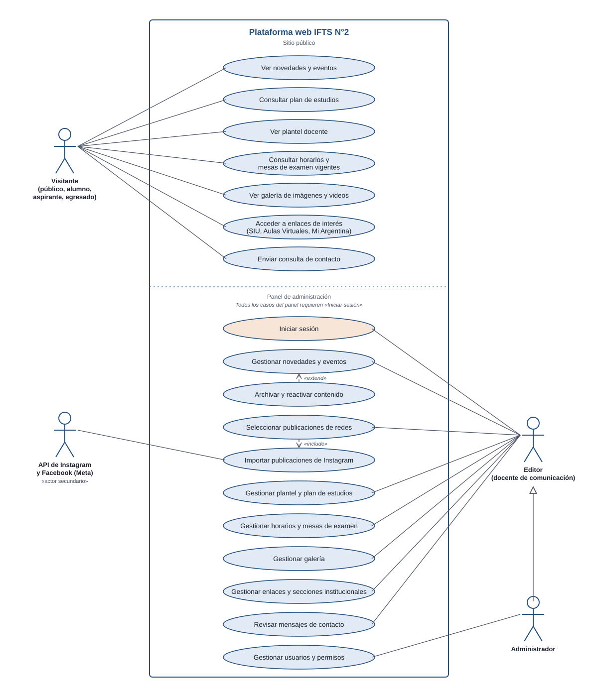
El modelo de dominio se presenta en dos partes: contenidos y redes, y área académica.
Figura 2
Diagrama de clases: contenidos, usuarios y redes sociales
Figura 3
Diagrama de clases: área académica
Figura 4
Secuencia: vinculación de una publicación de Instagram al sitio
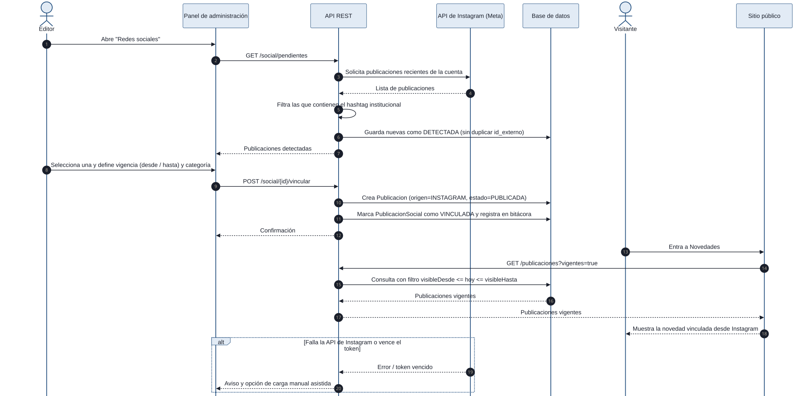
Figura 5
Secuencia: envío del formulario de contacto
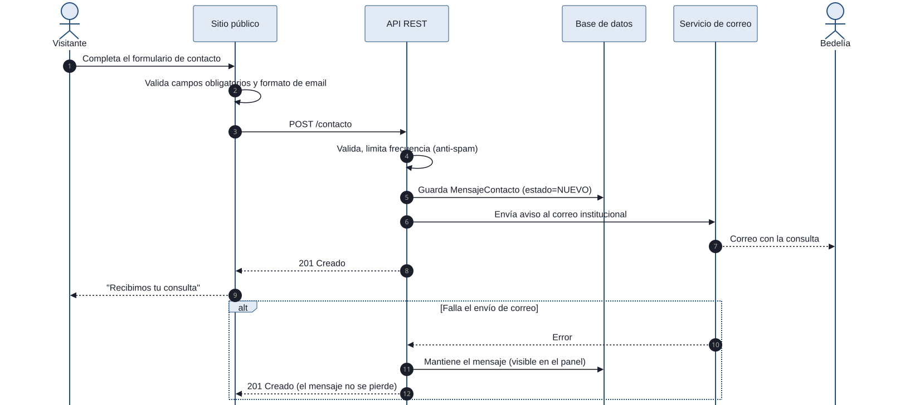
Figura 6
Actividades: carga y publicación de contenido
Figura 7
Actividades: vigencia y archivado del contenido
Figura 8
Estados de una Publicacion
Figura 9
Estados de una PublicacionSocial
Figura 10
Diagrama de componentes
Figura 11
Diagrama de despliegue
El modelo relacional se presenta en dos partes. La herencia entre Novedad y Evento se implementa en una sola tabla con un campo discriminador (tipo) y campos de evento opcionales.
Figura 12
Modelo entidad-relación: contenidos, usuarios y redes sociales
Figura 13
Modelo entidad-relación: área académica
El prototipo visual y del panel de administración se diseñó en Figma como un MVP navegable que se presenta al cliente en la DEMO de la Semana 6. Contiene seis pantallas de escritorio y nueve de móvil. Se prioriza lo que más valor aporta al cliente y más riesgo reduce: la identidad visual, la información académica vigente y el flujo editorial de publicaciones de redes sociales. Lo que queda para la siguiente iteración se indica de forma explícita en el prototipo.
Prototipo en Figma: IFTS N.° 2 — MVP visual y panel de administración
Tabla 12
Pantallas del prototipo y requerimientos que ilustran
| Pantalla | Contenido | Requerimientos |
|---|---|---|
| Inicio | Mensaje central "Formamos emprendedores gastronómicos", accesos rápidos (plan de estudios, horarios y exámenes, ingreso, contacto) y "Actualidad institucional" con las publicaciones seleccionadas por el instituto | RF02, RF04 |
| La carrera | Perfil profesional ("más que cocinar: emprender y gestionar"), plan de estudios por año y acceso a correlatividades | RF02, RF10 |
| Estudiantes | Selector de año y cuatrimestre, horarios de cursada, mesas de examen y accesos a SIU Guaraní, Aula virtual y Tutoría; nota de que los períodos anteriores se conservan en el archivo | RF03, RF06, RF07 |
| Ingreso | Próxima convocatoria, pasos para aspirantes (requisitos, preinscripción, confirmación) y material de consulta descargable | RF02 |
| Novedades | Filtros por año y por categoría, tarjetas de eventos, avisos, vida institucional y archivo histórico | RF03, RF04 |
| Panel administrador | Menú lateral (Resumen, Publicaciones, Avisos académicos, Horarios, Archivo, Configuración); lista de publicaciones de Instagram con filtros de origen y estado y acciones por tarjeta | RF01, RF04, RF05 |
| Móvil (M01 a M09) | Versión responsive de las seis pantallas, navegación inferior, menú desplegable y el flujo editorial de tres decisiones (seleccionar, aprobar, publicar) con los resultados "Publicación aprobada" y "Publicación descartada" | RNF04, RF04 |
Nota. Los textos de las pantallas son provisorios; el material oficial del instituto los reemplazará.
Flujo editorial del panel. El prototipo expresa el criterio central pedido por el cliente: nada llega al sitio sin decisión humana. Cada publicación detectada aparece como Pendiente, y el editor decide entre Aprobar y publicar o Descartar; el contenido no prioritario (por ejemplo, un saludo de efeméride) se señala para revisar. Estos estados se corresponden con el modelo del sistema: Pendiente es DETECTADA, aprobada es VINCULADA y descartada es DESCARTADA (Figura 9). El propio prototipo aclara que la integración automática con las redes queda sujeta a validación técnica y que la aprobación editorial es el requisito principal, lo cual coincide con la prueba de concepto y el plan de contingencia de carga manual planteados en la Sección 4.2.
Alcance del MVP frente al alcance completo. El prototipo cubre los módulos de novedades, académico vigente, enlaces y redes. Quedan para la iteración siguiente, ya indicadas en el prototipo: la sección Institucional y el formulario de Contacto (RF08), y los módulos de galería (RF09) y de gestión de plantel docente (RF10) en el panel. Los cuatro forman parte del alcance de la versión funcional de la Semana 13.
Figura 14
Mapa del sitio público
Figura 15
Mapa del panel de administración
Figura 16
Wireframe: Escritorio inicio y la carrera
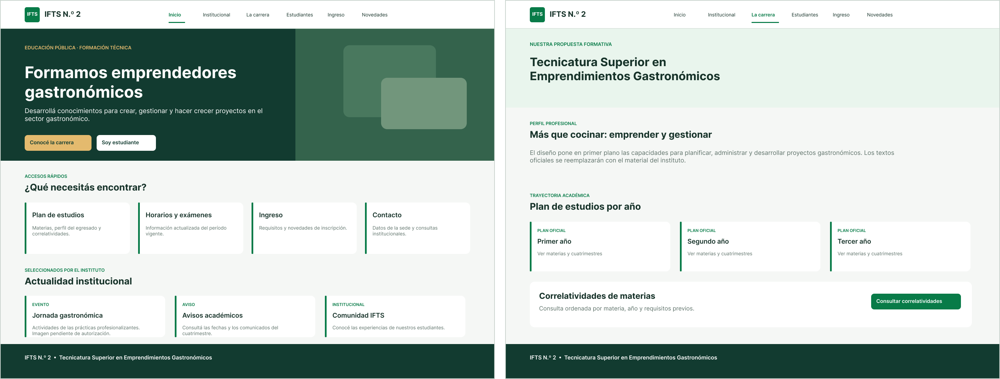
Figura 17
Wireframe: Escritorio estudiantes e ingreso
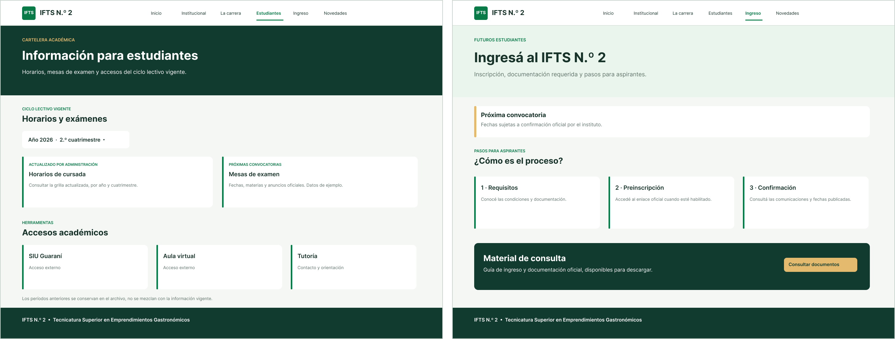
Figura 18
Wireframe: Escritorio novedades y panel
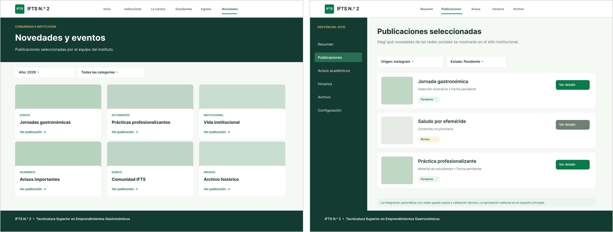
Figura 19
Wireframe: Moviles m01 a m09
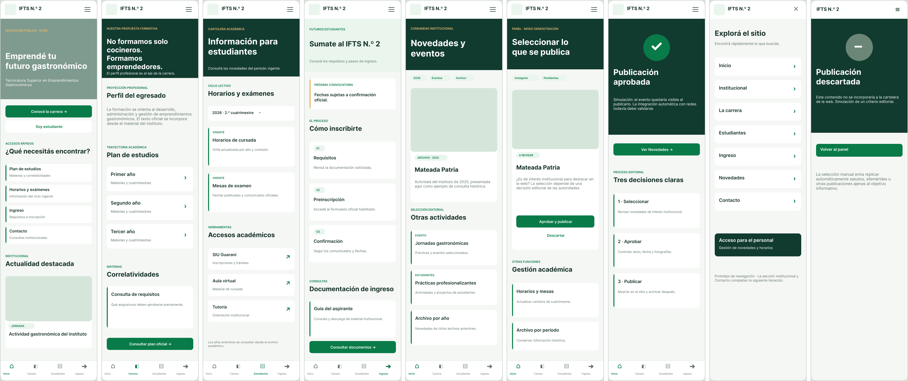
Lineamientos visuales. La paleta del prototipo toma los colores del logo del IFTS N.° 2: verde bosque (#123B30) para encabezados y pie, verde de marca (#087B48) para acentos y acciones principales, dorado (#E4BA6E) para llamados secundarios y fondo neutro cálido (#F5F7F5). La tipografía es una sans-serif geométrica (Inter) en toda la interfaz. Las tarjetas llevan un filete verde a la izquierda y las etiquetas de sección en mayúsculas, lo que da una jerarquía clara. El panel reutiliza el mismo sistema visual para que los editores reconozcan el sitio que están administrando. La paleta y la tipografía definitivas se ajustarán a los materiales de la Agencia de Habilidades cuando el cliente confirme el acceso a su carpeta de marca.
Tabla 13
Enlaces a los recursos del proyecto
| Recurso | Enlace |
|---|---|
| Prototipo en Figma | Abrir en Figma |
| Carpeta compartida del grupo en Google Drive | [completar] |
| Diagramas editables (draw.io / Lucidchart) | [completar] |
| Tablero de Trello | [completar] |
| Repositorio de GitHub | [completar] |
| Sitio de presentación del equipo | https://talento-tech-group.vercel.app |
| Presentación (Canva / diapositivas) | [completar] |
Nota. Todos los enlaces deben estar compartidos públicamente antes de la entrega.
Ladas, C. (2009). Scrumban: Essays on Kanban systems for lean software development. Modus Cooperandi Press.
Meta for Developers. (s. f.). Instagram Platform. Meta Platforms. https://developers.facebook.com/docs/instagram-platform
Minuta de reunión entre el IFTS N.° 2 y el IFTS N.° 29. (2026, 30 de junio). [Documento interno].
Object Management Group. (2017). OMG Unified Modeling Language (OMG UML) (Versión 2.5.1). https://www.omg.org/spec/UML/2.5.1
Talento Tech. (2026). Práctica profesionalizante IV: Proyecto integrador. Primera etapa: creación de la empresa y software a desarrollar [Trabajo práctico]. IFTS N.° 29.
Sommerville, I. (2011). Ingeniería de software (9.ª ed.). Pearson Educación.
World Wide Web Consortium. (2023). Web Content Accessibility Guidelines (WCAG) 2.2. https://www.w3.org/TR/WCAG22/
Los datos de esta sección provienen de los perfiles presentados en la Etapa 1 (Talento Tech, 2026), donde figuran los enlaces completos. Los campos entre corchetes deben completarse con la información personal de cada integrante antes de entregar.
Tabla 14
Fichas profesionales del equipo
| Integrante | Rol | Habilidades | Herramientas | GitHub | |
|---|---|---|---|---|---|
| Martín Juan | Product Owner | Gestión de producto, comunicación con el cliente, priorización de tareas | n8n, Jira | linkedin.com/in/martojuandev | github.com/Marto85 |
| Nicolás Rolón | Backend Developer | Node.js, bases de datos, APIs y seguridad | Node.js, arquitectura, seguridad | linkedin.com/in/nicolaslrs | github.com/NicolasRolon |
| Gastón Zampar | Frontend Developer | React, Angular, UI/UX | React, Angular, CSS | linkedin.com/in/zamparg | github.com/zamparg |
| Adrián Madroñal | Tester (QA) | Testing manual, detección de errores, control de calidad | Cypress | linkedin.com/in/adrian-madroñal-63a38480 | github.com/MaverickARG |
| Santiago Cuda | DevOps | Infraestructura, AWS, automatización de despliegues | AWS, Linux, seguridad | linkedin.com/in/santiagocuda | github.com/santicuda |
Por cada integrante se adjunta un currículum vitae de una página con el siguiente contenido: